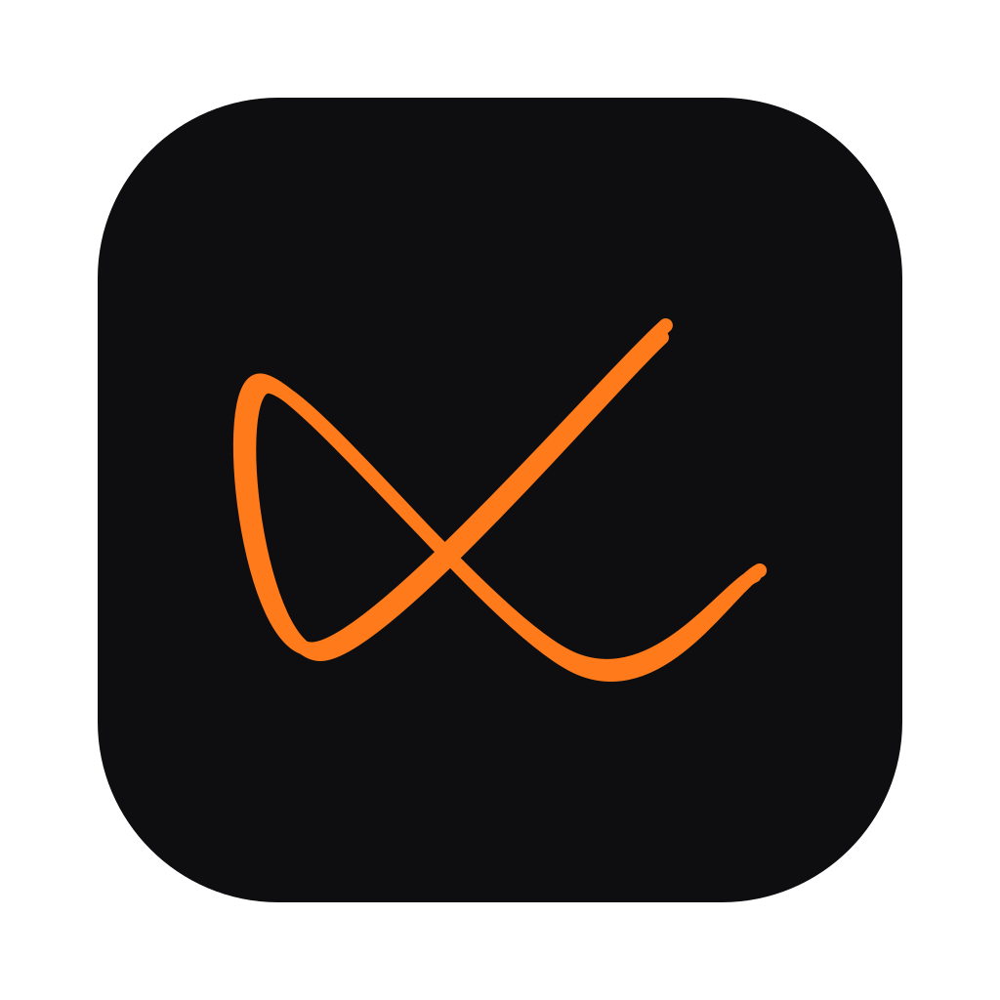
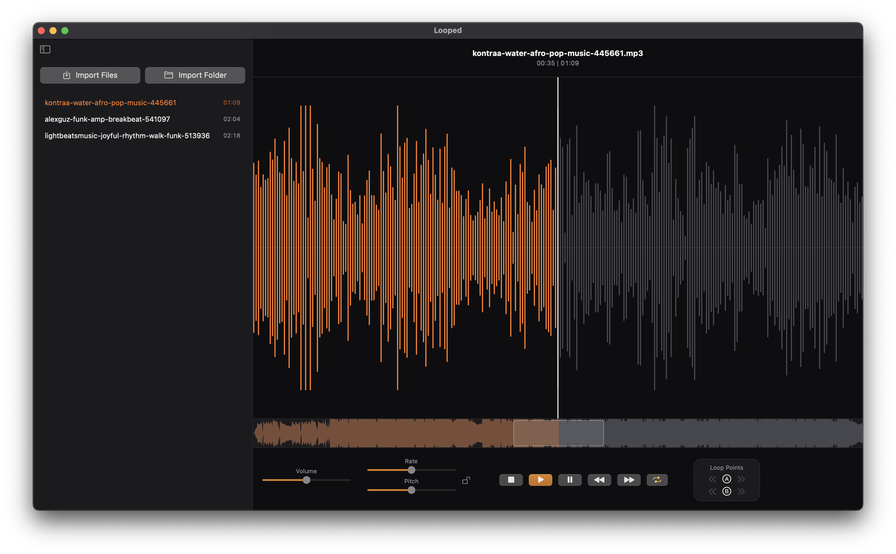

Looped
Audio looper for rehearsing instruments on macOS.
Waveform, Library, seamless loops, speed & pitch control.

Or install with Homebrew
brew tap rkkeepstrack/looped https://github.com/rkkeepstrack/looped.git
brew install --cask looped
xattr -dr com.apple.quarantine "/Applications/Looped.app"
Requires macOS 15+. Looped isn’t notarized, so macOS quarantines the download and refuses
to open it — the xattr line clears that (needed for a manual download too).
Source on GitHub.